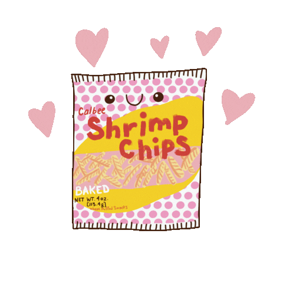

Sunny Song Will Never Be Famous
May 8, 2021
I found myself hooked on this book and finishing it in a day. Sunny Song is an incredibly relatable teenager who is just trying to make a name for herself on social media, ever since her mother posted a video of her dancing as a child that went viral. However, when her family decides that she has an addiction paired with a fumbled incident livestreamed to the world, she gets sent off to digital detox camp.
I really appreciated that there were legitimate critiques about technology (and the various ways that the various detox campers could be adversely affected) as well as plenty of scenes of how technology could be used in positive ways, and I'm glad that Sunny ended up finding a happy medium between the two. I often find that commentary about technology tends to start at "evil tech is evil" and usually doesn't showcase the very real ways that it has changed lives for the better as well, so seeing both here was very gratifying.

I loved the relationships that Sunny had!! Sunny's relationship with her father, who was just as laid-back as she was, but was able to gently get through to Sunny about her social media addiction was soothing to me. Sunny's tension with her mother, who wanted to push her to be the best, despite Sunny excelling best at Social Media rather than schoolwork was intriguing. Sunny's back-and-forth relationship with her younger sister, who would insult her on one hand and then send Korean snacks to camp was relatable to anyone with siblings. Sunny's friendship with Delia at camp, which was so refreshing and pure (and them bonding over Korean snacks was so wonderful). Sunny's relationship with Theo, the cute farm boy which was awkward and at times they butted heads but managed to communicate with each other in a way many relationships (especially in books) didn't seem to.
I also really appreciated that Sunny, as a Korean American, understands a bit of spoken Korean that her parents would say to her, wasn't particularly skilled at Korean and felt guilty about it - as a Chinese American myself who can speak Chinese but is slowly working toward being literate, the guilt of giving up learning a language of your culture when you were younger is one that has weighed heavily on me. The emphasis that Sunny has a close connection to her heritage via food was also one that was incredibly relatable.
I also enjoyed how the love interest, while very cute, was remarkably awkward and had an older brother that most people would've preferred to fawn over. The representation of awkward cute boy who isn't hot was a fun one to read, especially given most of his farm puns. The way his relationship built with Sunny was paced nicely, and I appreciated the way they slowly became friends and then more.
I had fun reading this book.
A thank you to Sourcebooks Fire and NetGalley for the ARC.

More about Sunny Song Will Never Be Famous here:

Title: Sunny Song Will Never Be Famous
Author: Suzanne Park
Sunny Song's Big Summer Goals:
1) Make Rafael Kim my boyfriend (finally!)
2) Hit 100K followers (almost there…)
3) Have the best last summer of high school ever
Not on Sunny's list: accidentally filming a PG-13 cooking video that goes viral (#browniegate). Extremely not on her list: being shipped off to a digital detox farm camp in Iowa (IOWA??) for a whole month. She's traded in her WiFi connection for a butter churn, and if she wants any shot at growing her social media platform this summer, she'll need to find a way back online.
But between some unexpected friendships and an alarmingly cute farm boy, Sunny might be surprised by the connections she makes when she's forced to disconnect